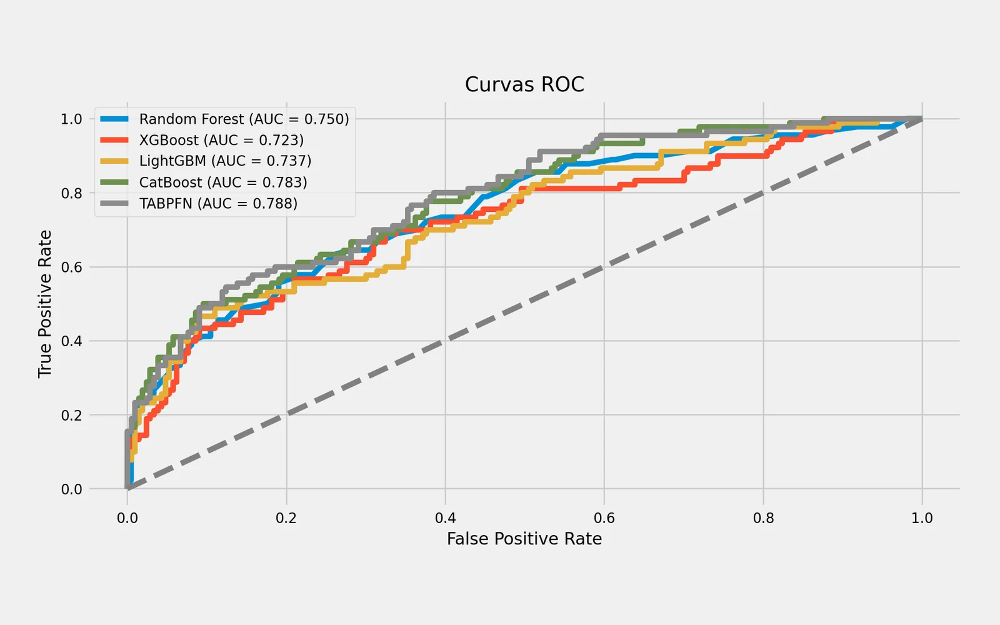
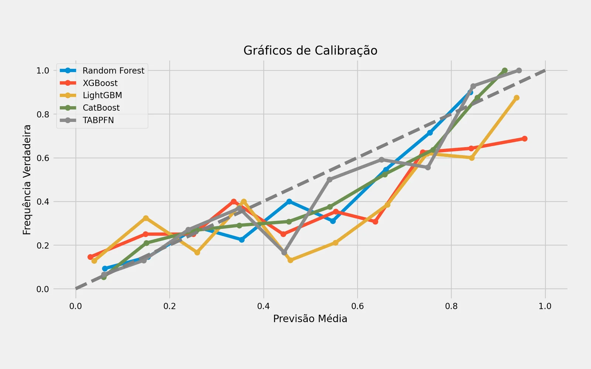
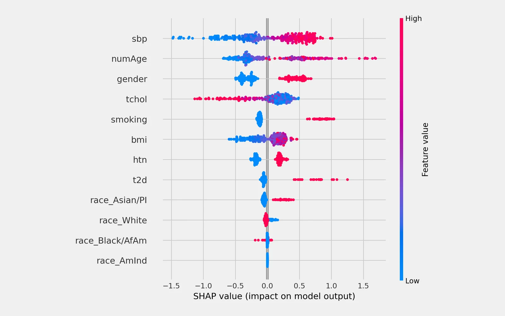
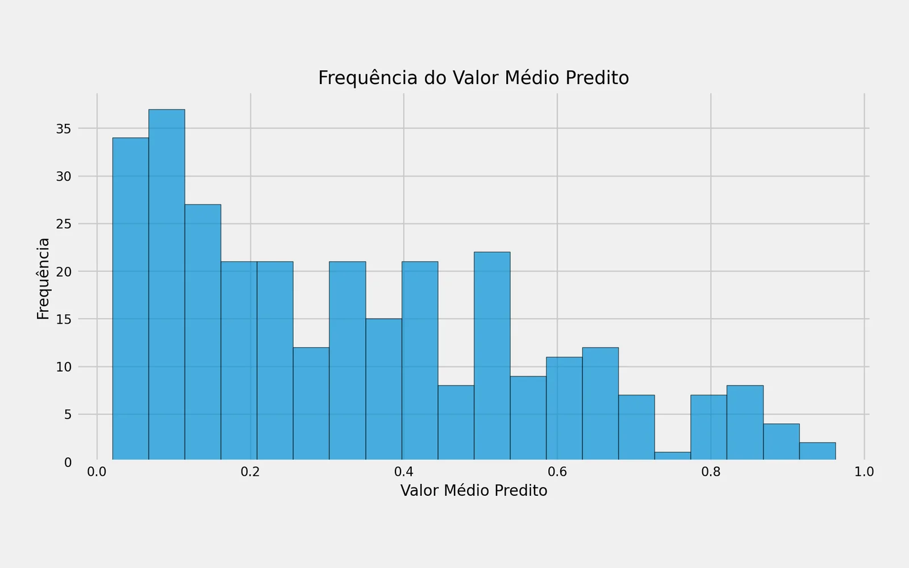

PortfólioModelos preditivos e estatística
Predição de risco cardiovascular
Comparação de cinco algoritmos de classificação para prever doença cardiovascular em pacientes acima de 55 anos, com seleção de variáveis por Boruta e interpretação por valores de Shapley. A maior AUC-ROC (0,788) foi do TabPFN, modelo pré-treinado para dados tabulares, sem ajuste de hiperparâmetros.
- Contexto
- Curso de Verão 2025, LABDAPS, Faculdade de Saúde Pública da USP
- Problema
- Classificação binária: tem ou não doença cardiovascular
- Técnicas
- TabPFN, CatBoost, LightGBM, XGBoost, Random Forest, Boruta, SHAP
- Código
- Notebook no GitHub
Etapas
Do dado bruto ao modelo explicado.
Busca aleatória: RandomizedSearchCV com validação cruzada de 3 partes. A amostra de 1.000 cabe no limite do TabPFN.
Resultados
Métricas no conjunto de teste após a otimização. Precisão e recall na classe positiva.
| Modelo | Acurácia | Precisão | Recall | AUC-ROC |
|---|
Matriz de confusão
TabPFN no conjunto de teste: 300 pacientes, 90 com a doença, 230 classificações corretas.
Valores reconstruídos a partir do relatório de classificação do notebook (precisão 0,62 e recall 0,56 na classe positiva, 210 negativos e 90 positivos).
Interpretação
Valores de Shapley no modelo CatBoost. Pressão sistólica, idade e sexo têm maior peso; as variáveis de raça têm peso baixo e foram descartadas pelo Boruta.
Média do valor absoluto de SHAP por variável, lida do gráfico gerado no notebook. Em destaque, as quatro confirmadas pelo Boruta.
Seleção de variáveis
TabPFN com as 4 variáveis selecionadas, comparado ao modelo com todas.
Gráficos do notebook
Imagens geradas pelo notebook do estudo.







